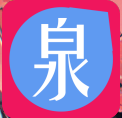
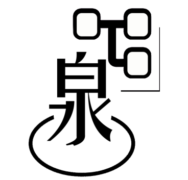
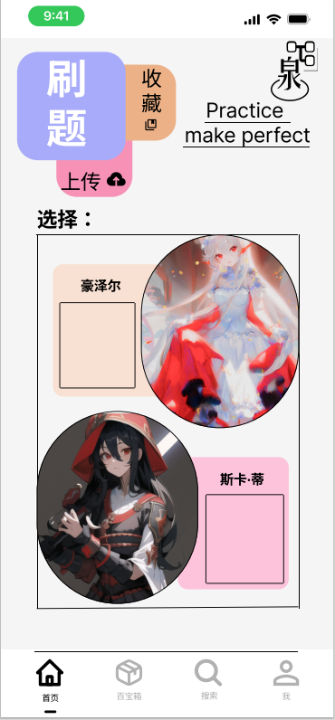
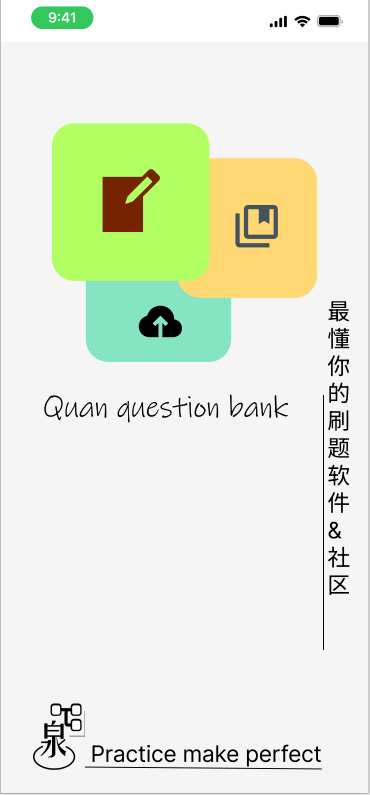

2022年12月25日
泉题库ui设计的灵感来源是多方面的，包括市场需求、用户反馈、竞品分析、设计趋势等。我们通过调研和分析，确定了设计方向和目标用户需求。在设计过程中，我们秉持着以用户为中心的原则，注重用户体验和功能性。同时我们采用了一系列工具和方法，如头脑风暴、原型设计、交互测试等来确保最终效果符合预期并能满足市场需求。
在泉题库UI设计中，我们遵循以下设计理念和原则：简洁、易用、美观、一致性、可扩展性。我们采用了用户中心化的设计方法，通过多次用户调研和测试，精准把握用户需求。对于界面布局和风格选择，我们注重信息层次分明，页面构造清晰有序，并且与品牌形象相融合。在颜色和字体运用上，我们以彩色系为主调，搭配简洁通透的字体。交互设计与用户体验是我们关注的重点，通过符合人类认知规律的交互方式和逻辑流程来提高用户对系统的满意度。



这是一个UI作品，所以你可以直接观看它！